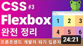

YouTube
#chan1 #chan2 #chan3
클론코딩 유튜브 사이트 따라 만들기(HTML+CSS 연습편, 웹 포트폴리오) | 프론트엔드 개발자 입문편: HTML, CSS, Javascript
1M views 1 month ago
1K
0
Share
Save
Report
드림코딩 by 엘리
1M subscribers
SUBSCRIBE
Up next

프론트엔드 강의, 프론트엔드 개발자가 되고 싶다면? 웹개발 입문자편 강의를 시작합니다 ☆ (HTML, CSS, Javascript + 실전 프로젝트)
드림코딩 by 엘리
82K views
HTML 기초, React 할때 꼭 필요한 팁! 쉽다고 무시하면 안돼요 | 프론트엔드 개발자 입문편: HTML, CSS, Javascript
드림코딩 by 엘리
82K views
HTML 태그 완성, 웹 포트폴리오 만들기 전에 꼭 보세요 | 프론트엔드 개발자 입문편: HTML, CSS, Javascript
드림코딩 by 엘리
82K views